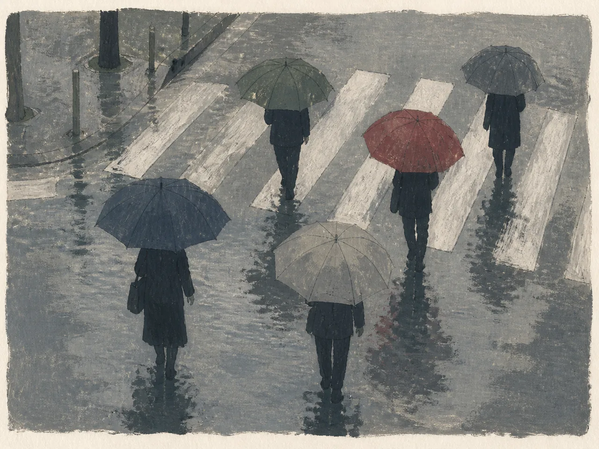
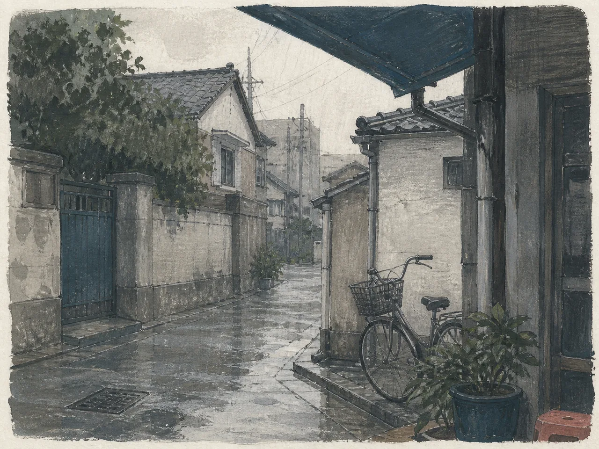
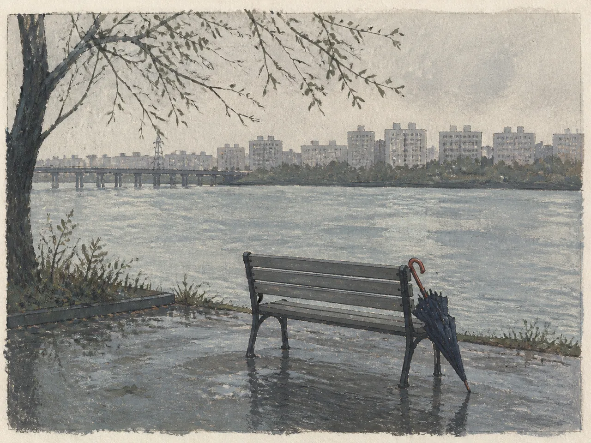

서울의 비를 모으는 시민 아카이브 · 제1호 · 2026
지난 비를 읽는 시간입니다. 서울에 남은 장면을 천천히 골라보세요.
사진은 선택입니다 · 새 기록은 관리자 검수 후 공개됩니다 · 이 데모에서는 브라우저 안에만 저장됩니다 · 날씨 데이터: 기상청
기억에 남은 비 오는 날의 한 장면을 적어주세요.
장면을 떠올릴 수 있는 짧은 제목을 적어주세요.
정확한 주소 대신 구 단위로 남깁니다.
그 장면에 가장 가까운 상태를 고르세요.
공원, 역, 큰길처럼 공개된 장소만 적어주세요.
20자 이상 적어주세요. 소리, 빛, 냄새처럼 기억에 남은 한 가지면 충분합니다.
사진을 선택하면 아래의 기록용 삽화 대신 사진이 사용됩니다.



모든 그림은 사진과 구분되는 기록용 삽화로 표시됩니다.
정확한 주소나 타인의 얼굴이 드러나는 정보는 적지 말아주세요. 제출된 기록은 관리자 검수 후 공개됩니다.